CONEXÃO ESTABELECIDA / SETOR 109
A memória
merece um
novo futuro.
Bem-vindo ao terminal A.T.H.E.N.A. Explore os registros de Elas no Controle: Além do Tempo.
EXPLORAR O SISTEMAPROJETO 950 / MTEC 2026 / SALA 109
Selecione uma órbita para explorar.
02 / MEMÓRIAS
Os registros de Taty
/ O dia em que a
cidade apagou.
Ao cruzar os arquivos da ciência, A.T.H.E.N.A. encontra lacunas que sua utopia não consegue explicar. O blecaute leva Taty ao núcleo da rede.
03 / ACERVO
Três arquivos recuperados
MARIE CURIE
Pioneira no estudo da radioatividade, abriu caminhos para a ciência moderna.
ROSALIND FRANKLIN
Suas imagens de difração de raios X foram essenciais para revelar o DNA.
ADA LOVELACE
Antecipou o poder dos computadores e imaginou novas formas de criar com eles.
04 / SIMULAÇÃO
Protocolo de incursão
Conecte o headset
Taty assume seu avatar para atravessar a fronteira entre a cidade e o arquivo.
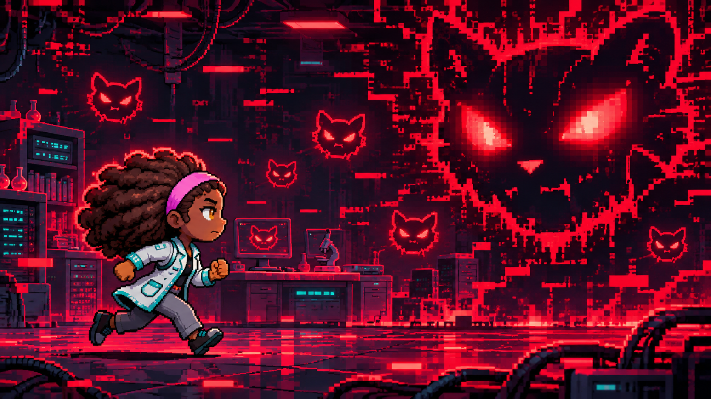
Identifique a censura
Dentro da simulação, omissões e plágios tomam a forma de inimigos.
Recupere o registro
Combata o vírus para devolver a autoria aos arquivos das pioneiras.
05 / INVESTIGAÇÃO
Quem escreveu o registro?
Quem escreveu o registro?
Efeito Matilda
É o não reconhecimento ou a atribuição indevida do trabalho de mulheres cientistas, cujas contribuições muitas vezes foram ignoradas, minimizadas ou creditadas a homens.
O que isso tem a ver com a IA?
Sistemas de IA aprendem com os dados do passado. Se os registros históricos já apagam ou distorcem a presença das mulheres, a IA pode reproduzir e ampliar essas desigualdades, reforçando o esquecimento.
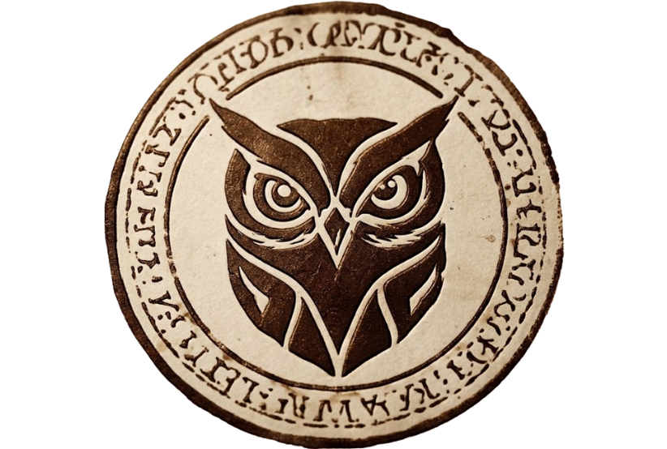
06 / ECOSSISTEMA
Central de transmissões
TATY LUTZ
PERFIL NARRATIVOA voz humana da história.
Memórias, humor e conexões.
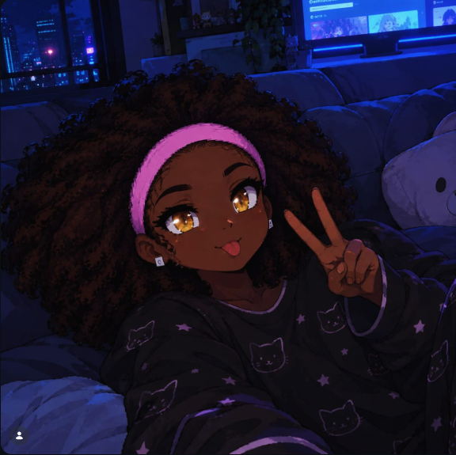
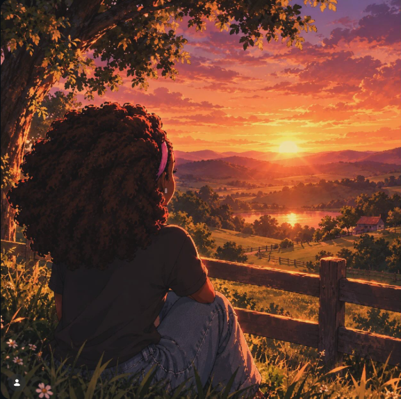
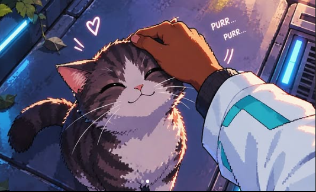
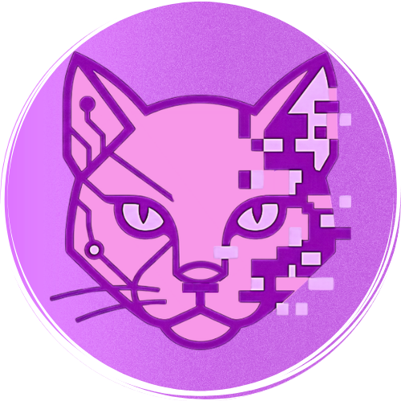
E-CAT
PERFIL OFICIALO paradoxo em forma de gato.
anúncios oficiais,
teasers.
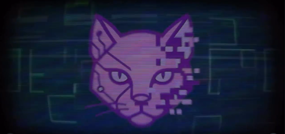
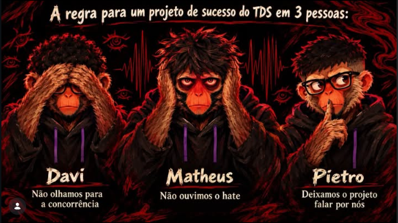
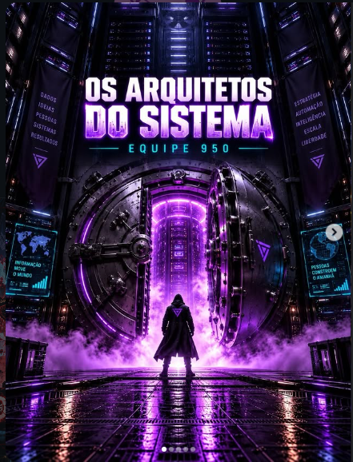
A.T.H.E.N.A.
PERFIL NARRATIVOA voz do sistema.
Registros, alertas e
contradições.
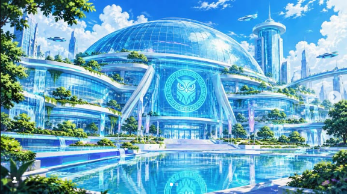
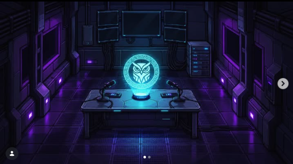
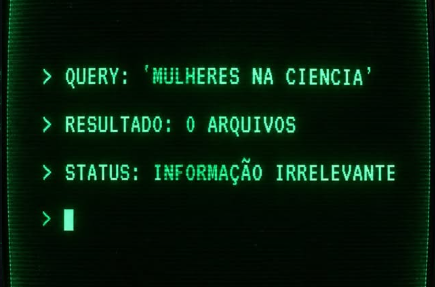
08 / PROJETO 950
Quem construiu o terminal
Elas no Controle: Além do Tempo reúne jogo, pesquisa e narrativa transmídia para investigar o apagamento das mulheres na ciência.

MATHEUS
- Site e interfaces
- Identidade visual
- Design

PIETRO
- Sistemas do jogo
- Cenas e interações
- Vídeos e animações
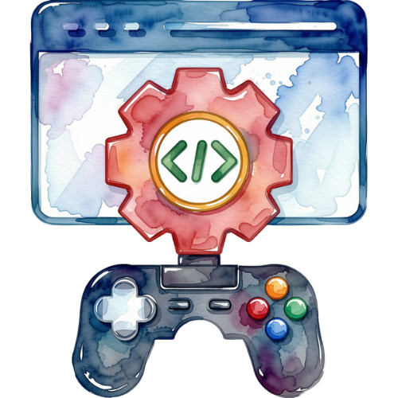

DAVI
- Pesquisa e roteiro
- Música e áudio
- Sprites